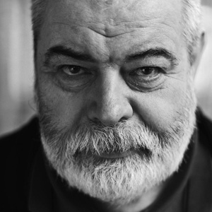
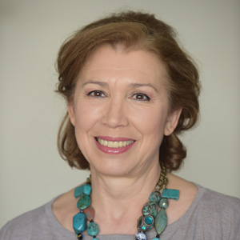
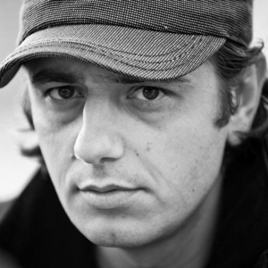
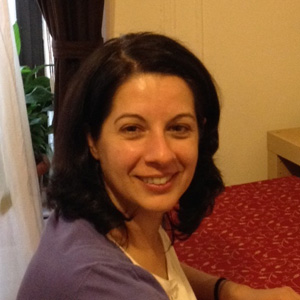
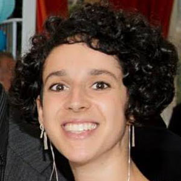
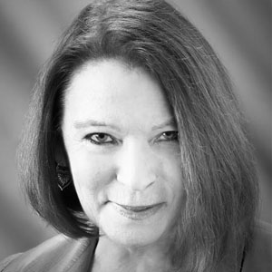

the Romanian Film Festival in Seattle
2nd edition
NOV 20-22, 2015
Guests
-
Radu Gabrea
Radu Gabrea graduated from the Faculty of Construction and the Theatre and Film Art Institute in Bucharest. His film Too Small for such Great War (1969) participated at the Locarno Festival. Beyond the Sands (1973), forbidden by communist censorship, is considered his most important Romanian film of the 70s by Mira and Antonin Liehm, UCLA Press. Between 1974-1996, Gabrea lived in Germany. His first German film, Jakob, don't be afraid (1981) opened the Jewish Film Festival at the Kennedy Center in the US and was selected at Telluride, Colorado. In New York Times, Vincent Canby discussed his cult film A Man like Eve (1984) in a very laudatory manner. Returning to Romania in late the 1990s, the director and producer Gabrea made several documentaries, among which Struma (2000), awarded the Special Mention at the International Festival in Jerusalem, Goldfaden's Heritage (2004), and Rumenye, Rumenye (2006, 2013). He gained his Ph.D. in Film Studies from the Catholic University of Louvain-la-Neuve, Belgium, with a thesis on Werner Herzog and German medieval mysticism, about which Henri Agel wrote in Positif that "it is one of the most beautiful books on cinema ever written." In 2011 he received the Knight's Cross from the Federal Republic of Germany.
-
Victoria Cocias
Victoria Cocias graduated from the Theatre and Film Art Institute in Bucharest in 1980. She has given life to classical roles in national and international plays from Caragiale to Chekov, from Shakespeare to Edward Albee. She worked with Romanian directors before '89 - Andrei Blaier, Dan Pita, Nicolae Margineanu, Lucian Pintilie, Radu Gabrea - as well as with directors of the Romanian New Wave: Adrian Sitaru, Cristi Puiu. She has also worked with Nae Caranfil in Asfalt Tango and Pericoloso Sporgersi. At the Romanian Film Days (2012) she received the Special Mention for her interpretation of Elena Ceausescu in Three days before Christmas, directed by Radu Gabrea. The show and film La Divina made after Terrence McNally's play Master Class, in which Victoria Cocias plays Maria Callas brings her international acclaim: Kyra Winthrop-St. Gery considers her performance exceptional and James Claridge writes that she is a "a great actress in a great show".
-
Florin Lazarescu
Florin Lazarescu (prose writer and screenwriter) born 1974 in Doroscani, Iasi, graduated from the A. I. Cuza University in Iasi with a degree in literature. Florin made his literary debut in 2000 with the collection of short stories Mistletoe Nests (Cuiburi de visc, Outopos, Iasi). Other literary works include the prose volume The Tube with the Hat (Lampa cu caciula, Polirom, 2009) and several novels: What They Know of the Panda Bear, (Ce se stie despre ursul panda, Polirom, 2003), Our special Envoy (Trimisul nostru special, Polirom, 2005 and 2014, winner of the Grand Prize for Eastern-European Literature at Frankfurt in 2006, and translated into French, German, Spanish, Italian, Slovenian, Hungarian and Croatian), and Numbness (Amortire, Polirom, 2013, translated into Chinese). He is the (co)author of the screenplays for The Tube with the Hat (2006, directed by Radu Jude, winner of Sundance Festival for the best international short film, 2007), A Shadow of a Cloud (directed by Radu Jude, premiered at Cannes in 2013), and Aferim! (directed by Radu Jude, winner of a Silver Bear in Berlin, 2015).
-
Monica Filimon
Monica Filimon was born in Romania and moved to the United States in 2003. She is currently an Assistant Professor of English at Kingsborough Community College, CUNY. She holds a Ph.D. in Comparative Literature from Rutgers (2011) and has published articles on French, German and Romanian cinema. She is now working on a book about Cristi Puiu's relevance to Romanian and world cinema. We are looking forward to welcoming her in Seattleat our festival for the second time, as a moderator and presenter.
-
Neely Goniodsky
Neely Goniodsky earned her BA at Concordia University, Montreal, and her MA at the Royal College of Art, London. She has directed and animated over 20 short films including productions at the National Film Board of Canada, and Seattle University. She received numerous Canada Council and CALQ production grants for her work. Neely's projects explore a combination of traditional animation techniques including ink and paint on paper, cut-out collage, under the camera animation, 2D computer animation and compositing. Her films have been touring the world and have been screened at many international film festivals including the Ottawa International Animation Film Festival, and Animafest, Zagreb.
-
Maryna Ajaja
Programmer/selector since 1997 for SIFF (Seattle International Film Festival), a twenty-five day film festival of over 400 films, that includes features, documentaries, archival films, animation, experimental, short films, and film forums. Ajaja is a writer and a poet and specializes in films from Eastern/Central European, Russia, Baltics, Central Asia, and Caucuses. Born in Hollywood, she makes her home in Seattle, Washington since 1969.